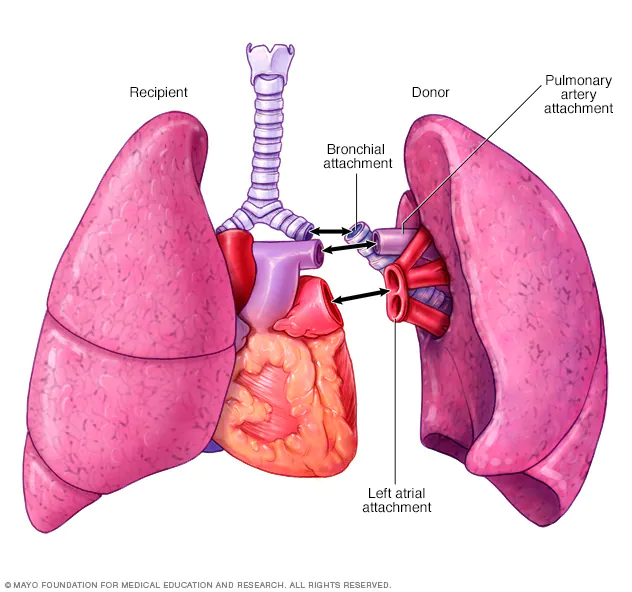

Características de los pulmonesLos pulmones tienen forma sacos. Se ubican en la caja toráxica. Para que un pulmón tiene que estar libre de enfermedades y deben ser compatibles con el tejido del paciente que recibirá el trasplante, así se reduce el riesgo de que el cuerpo rechace el pulmón nuevo |
 |